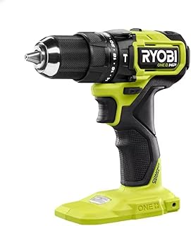

Best Impact Driver for Beginners 2026

Ryobi PBLID01 ONE+ HP Brushless Impact Driver
1,500 in-lbs · 3,200 RPM · 2.6 lbs · 3-speed modes · Auto mode
Check price on Amazon →What we like
- Auto mode starts slow to prevent cam-out, then ramps up once the screw bites. Perfect for beginners
- Three speed settings let you dial back power for delicate work — drywall anchors, small screws
- $79 for a brushless impact driver with 1,500 in-lbs is the best value in power tools right now
- Entire Ryobi ONE+ ecosystem of 100+ tools uses the same battery
What we don't like
- Plastic chuck collar feels cheaper than the metal on DeWalt or Milwaukee
- Longer than the DeWalt DCF850 by over an inch — matters in tight spaces
- Green color is polarizing. If tool aesthetics matter to you, this isn't the choice
Do I Need an Impact Driver for Home Use?
Ask yourself these three questions:
- Do I drive screws longer than 2 inches? If yes → you'll benefit from an impact driver.
- Do I build things outdoors? Decks, fences, raised garden beds, treehouses. If yes → you need an impact driver.
- Have I ever stripped a screw head and had to drill it out? If yes → an impact driver would have prevented that.
If you answered no to all three, a drill with a clutch is the right tool for you. Use the money you saved on the impact driver to buy better drill bits and quality screws.
Best Impact Driver for Deck Screws
For deck screws specifically — 2-1/2" to 3" coated deck screws driven into pressure-treated lumber — you want torque and control. The Ryobi's auto mode genuinely helps here: it starts slow to prevent the bit from walking off the screw head, then ramps up once the screw is seated. For a large deck project with thousands of screws, the Ryobi is the right tool. If you're only building one deck and plan to use the tool for mostly indoor work afterwards, the smaller DeWalt DCF850 is a better all-rounder.
Best Impact Driver for Fence Building
Fence pickets want 1-1/4" to 1-5/8" exterior screws — shorter than deck screws, but you're driving hundreds of them. Speed matters more than raw torque. The DeWalt DCF850 at 3,600 RPM and 4.0 inches long is ideal here — fast, light, and compact enough to maneuver between pickets. The compact body means less fatigue over a full day of fence work.
The Bottom Line
For a beginner building decks, fences, or doing general DIY: Ryobi PBLID01 at $79. It's the right price, the right power, and the auto mode genuinely helps while you're learning trigger control. If you want a buy-once-cry-once option: DeWalt DCF850B at $149 — shorter, lighter, and built to last a career. Starting from zero tools? The Makita combo kit at $229 gives you a drill and impact driver together for less than buying separately.